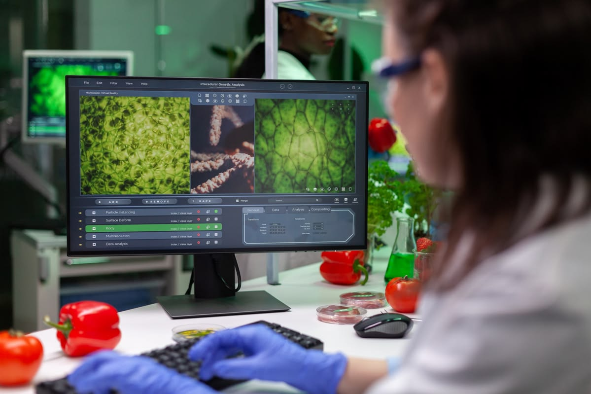

ជាវិទ្យាសាស្ត្រធម្មជាតិដែលសិក្សាអំពីជីវិត និងសារពាង្គកាយមានជីវិត (មនុស្ស សត្វ និងរុក្ខជាតិ)
ជាវិទ្យាសាស្ត្រធម្មជាតិដែលសិក្សាអំពីជីវិត និងសារពាង្គកាយមានជីវិត រួមមាន រចនាសម្ព័ន្ធ មុខងារ ការលូតលាស់ ដើមកំណើត ការវិវត្ត និងការបែងចែករបស់ពួកវា。ពាក្យនេះមកពីភាសាក្រិកគឺ Bios (ជីវិត) និង Logia (ការសិក្សា)
អ្នកជំនាញមន្ទីរពិសោធន៍វេជ្ជសាស្ត្រ អ្នកស្រាវជ្រាវឱសថ

អ្នកជីវបច្ចេកវិទ្យា អ្នកអតិសុខុមជីវវិទ្យា
និងអ្នកហ្សែនវិទ្យា
អ្នកអេកូឡូស៊ី អ្នកជីវវិទ្យាសត្វព្រៃ ឬរុក្ខជាតិ
និងទីប្រឹក្សាបរិស្ថាន
គ្រូបង្រៀន ឬសាស្រ្តាចារ្យជីវវិទ្យា អ្នកនិពន្ធ ឬអ្នកសារព័ត៌មានវិទ្យាសាស្ត្រ